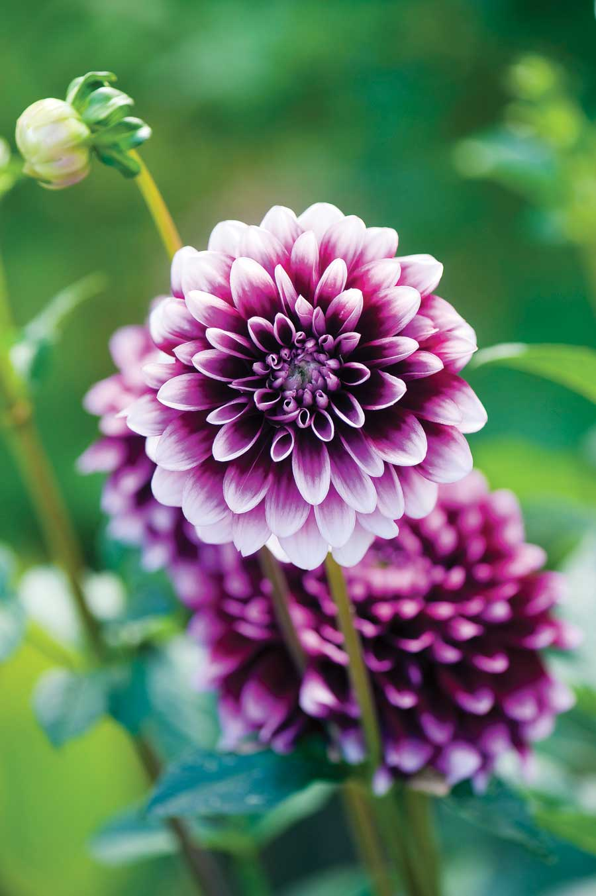
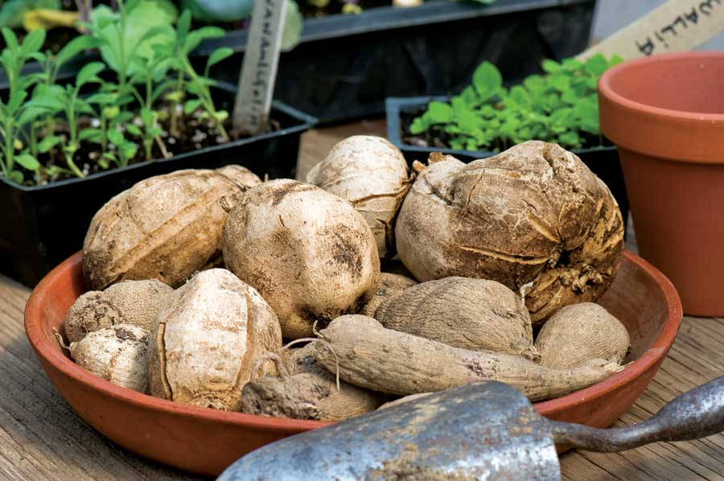
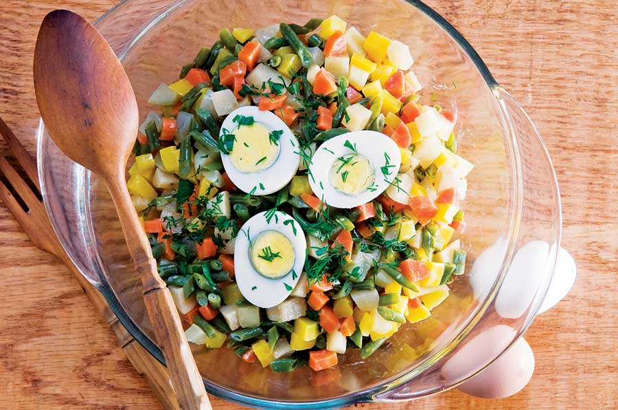
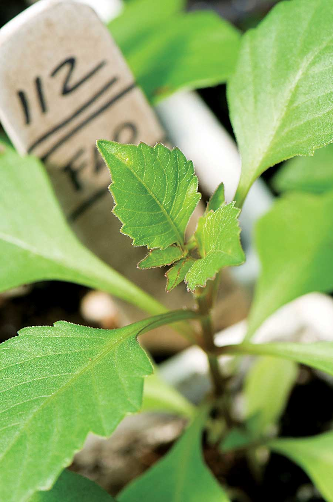
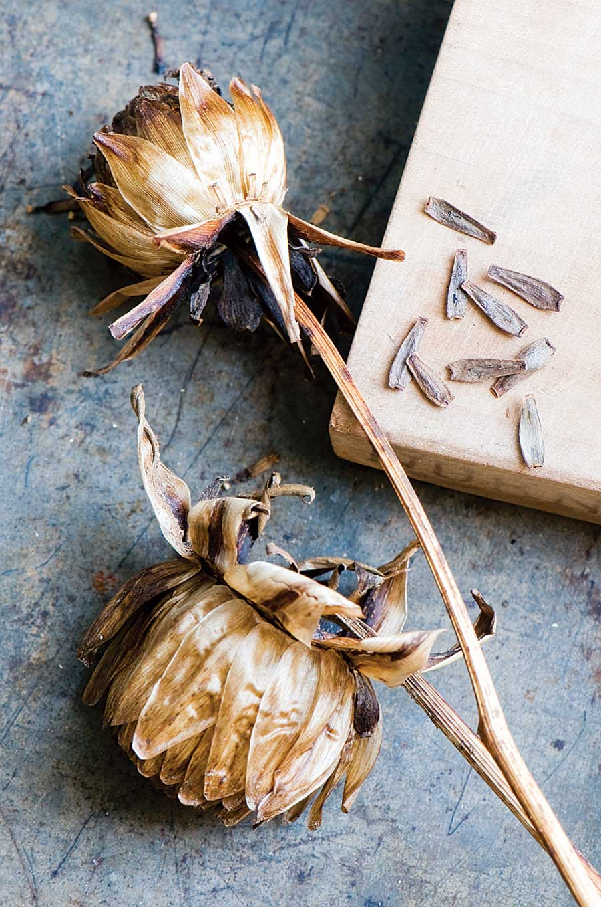

Among the most beautiful of flowers, dahlias are also edible! Most people don’t realize that dahlias are a close New World relative of both sunflowers and Jerusalem artichokes. In addition to the petals, you also can eat the tubers (see recipe below). Although not all dahlia bulbs are tasty (some are quite bland), they have a range of flavors and textures that is hard to quantify: There are those with crunchy textures akin to water chestnuts or yacon (read Yummy Yacon for more information), and those with flavors ranging from spicy apple to celery root or even carrot. A lot depends on the variety and the soil in which the variety grew. Heirlooms such as ‘Yellow Gem,’ introduced in 1914, are much more flavorful than the modern hybrids bred for huge, fluffy flower heads.
Dahlias have been lurking on the sidelines of my kitchen garden for a long time. I don’t recall exactly when I started to grow them, but I had always thought of dahlias as showy vegetable companions rather than ornamentals because my grandfather had intermingled them among his own vegetables many years ago. Memories of that remarkably beautiful mixture of flowers and blue-ribbon vegetables have stayed with me ever since. Based on those child hood recollections, I just assumed that interplanting with dahlias was a normal thing to do. Plus, honeybees adore dahlias, so if you want to attract those important pollinators to your garden, you really can’t find a splashier choice.
The culinary properties of dahlias were well-known to the indigenous peoples of mountainous southern Mexico, where the flower originated. But the tubers were small and knotty by today’s standards, and the flowers weren’t much to look at. In some cases, such as that of the tree dahlia (Dahlia imperialis), these plants could reach up to 20 feet in height. That wild, treelike species was called acocotli by the Aztecs, meaning “water cane.” They valued the plant especially as a source of water for traveling hunters. Even to this day, dahlias will store large reserves of water in their stems - one reason they succumb so quickly to hard frosts.
Seeds for dahlias were sent to Spain in 1789 for the three basic species then known: D. atropurpurea, D. pinnata and the aforementioned D. imperialis. The early breeders of dahlias in Europe were primarily interested in developing the plant as a food source (especially the tubers), but those experiments never met with much success. When double forms of the flower began to emerge in the early 1800s, interest shifted entirely to the flower and breeding what is known today as the pompon (ball- or globe-shaped) dahlia.
There was a great deal of competition to produce the most beautiful flowers, and by the 1840s, several lavishly illustrated books on dahlias added to the general craze for the novelty. The introduction of brilliant red D. juarezii in 1872, sent to Holland from Mexico, led to another breeding frenzy, and all the dahlia hybrids that we know today descended from the crosses made with this variety in the 1870s. In spite of that, only about five original hybrids survive from the 1800s: ‘Kaiser Wilhelm’ (1893), ‘Nellie Broomhead’ (1897), ‘Tommy Keith’ (1892), ‘Union Jack’ (1882), and ‘White Aster’ (1879). All the other thousands of dahlias shown in garden books of the period are now extinct. This is where I decided to step into the picture.
Several years ago, I offered an “edible tuber” dahlia through Seed Savers Exchange. The fact that you could eat the yam-size tubers intrigued me. It made me wonder why other dahlia tubers couldn’t be eaten as well. It turns out I was only relearning what the native peoples of southern Mexico had known for centuries.
Soon after that, I was bagging up dahlias in my greenhouse - getting them sorted and stored for winter - when I noticed that certain dahlias produced an abundance of tubers, while others did not. It soon became clear that this trait was most prevalent among the heirlooms, probably because they are genetically closer to the original wild species from which they were created. Some of the tubers were even fragrant, so I began tasting them by paring off the skin - the range of flavors was quite a revelation. It occurred to me that by back-breeding the heirlooms (breeding them against themselves in isolation), I might be able to recreate (in appearance) some of the extinct dahlias from the 19th century, and come up with tasty tubers as well. The following spring, I launched my plan.
I am three years into this experiment and I have created about 48 varieties that I consider to be good look-alikes of the extinct heirlooms. Once I am certain those plants are fixed in their traits, I will move on to tuber improvement by crossing the best-tasting ones with each other. This should be fairly easy to do because dahlias are not difficult to pollinate.
In the fall, dahlias will produce an abundance of seed pods. They must be dry and brittle before harvesting. It doesn’t matter if they have been frosted - frost doesn’t kill the seeds. Select the plumpest pods, as they will contain the most seeds. In January, start the seeds in flats, covering them lightly with potting soil. The potting soil should be warm and slightly moist. Once the seeds germinate and develop leaves (this may take three to four weeks), transplant them into individual pots. Let them develop into 6- to 8-inch plants before setting them out in the garden once the threat of frost has passed. Plant them at least 2 (preferably 3) feet apart. Always stake dahlias - they’re easily damaged.
Once the dahlias begin to bloom, you will be able to judge which ones you like and which ones you may want to pull up. Look for well-shaped flowers with interesting colors. I pull up and destroy all unwanted plants, saving the tubers for salads (they are nice in mixed fruit salads, especially with apples). In the fall, after frost has cut down the dahlias, lift the tubers of those you wish to save, store them in peat moss in a warm, dry place, and then start them in pots the following season.
To find out more about heirlooms, visit the Heirloom Seed and Plant homepage.
3 large carrots, diced, preferably a mix of yellow and orange
1 pound dahlia tubers, pared and diced
1/2 pound fresh green string beans, cut into diamonds
1/2 cup virgin olive oil
3 tbsp vinegar (tarragon, chervil or dill vinegar recommended)
Faux mayonnaise (see recipe below)
Salt and pepper to taste
1 hard boiled egg, quartered
Mixed herbs (dill, parsley, chives), chopped
Lower-Calorie Faux Mayonnaise
1/2 tsp ground mustard
1/2 tsp sugar
Salt and pepper
1/2 cup cream or evaporated milk
1/2 cup virgin olive oil
3 tbsp vinegar
Put the mustard, sugar, salt and pepper in a mixing bowl and stir in the cream or evaporated milk. Whisk in the oil, and then add the vinegar, whisking gently so the dressing thickens. Adjust seasonings to taste.
Steam the carrots, dahlia tubers and beans for 5 minutes or until still slightly “al dente.” Put the vegetables in a large mixing bowl and add the oil and vinegar while still hot. Let the vegetables cool, and then add the faux mayonnaise so it coats all the vegetables evenly. Transfer the vegetable mixture to a serving bowl and garnish with the egg and chopped herbs. Serve slightly chilled or at room temperature. Serves 4 to 6.
Heirloom Dahlias
Old House Gardens
Ann Arbor, MI 48103
734-995-1486
Know anything about the dahlia variety D. juarezii? Old House Gardens is looking for a source. Please contact them with any info you may have.
|
 ROB CARDILLO Dahlia blooms are showy, but it’s their edible tubers that make them an excellent addition to kitchen gardens. |
 ROB CARDILLO Dahlia tubers have a striking range of flavors. |
 ROB CARDILLO Dahlias are nice in fruit salads, especially with apples. Here they are paired with carrots and green beans. |
|
 ROB CARDILLO Start dahlia seedlings in January in flats of warm, moist potting soil. |
 ROB CARDILLO Choose the plumpest seed pods to get the maximum number of seeds. |
|